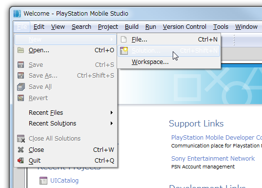
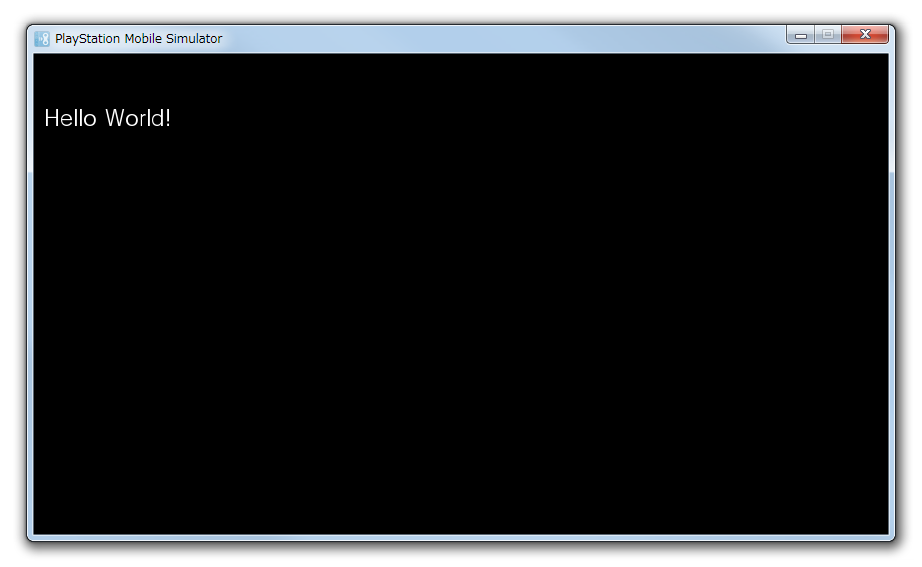

ここでは UI Toolkit を使用したもっとも簡単なアプリケーションの作成方法から動作確認までを解説します。
開発には PSM SDK 付属の PSM Studio を使用します。 事前に 開発環境の設定 を参照して PSM Studio の開発環境を設定してください。
Contents
PSM SDK 付属の PSM Studio には、 UI Toolkit アプリケーションを作成するためのプロジェクトテンプレートが用意されています。このテンプレートを使用してプロジェクトを作成します。
制限事項
現在、UI Toolkit アプリケーションのテンプレートは準備中です。以下の手順で UI Toolkit アプリケーションの プロジェクトを作成してください。
PSM Studio を起動します。
PSM Studio のメインメニューから [ファイル] ([File]) > [新規] ([New]) > [ソリューション...] ([Solution...]) を選択してください(図1)。
図1 ソリューションの新規作成
[新しいソリューション] ([New Solution]) ダイアログで [C#] - [PlayStation Mobile] - [PlayStation Application] を選択し、任意のプロジェクト名を入力して [OK] を選択して新しい PSM アプリケーションのソリューションを作成してください(図2)。

図2 ソリューションの新規作成ダイアログ
次に、参照するアセンブリを追加します。PSM Studio のソリューションパネルの[参照] ([References]) を右クリックし、[参照アセンブリの編集...] ([Edit References...]) を選択してください (図3)。

図3 参照するアセンブリの追加
[Edit References] ダイアログで [Packages] タブを選択し、[Sce.PlayStation.Highlevel.UI] のチェックボックスを有効にしてください(図4)。

図4 参照するアセンブリを追加した後のソリューション構成
AppMain.cs を開き以下のコードを上書きしてください。
- これが UI Toolkit を使用する最低限のコードになります。
- このコードを適宜カスタマイズして使用してください。
using System; using System.Collections.Generic; using Sce.PlayStation.Core; using Sce.PlayStation.Core.Environment; using Sce.PlayStation.Core.Graphics; using Sce.PlayStation.Core.Input; using Sce.PlayStation.HighLevel.UI; namespace UIToolkitApp { public class AppMain { private static GraphicsContext graphics; public static void Main (string[] args) { Initialize (); while (true) { SystemEvents.CheckEvents (); Update (); Render (); } } public static void Initialize () { // Set up the graphics system graphics = new GraphicsContext (); // Initialize UI Toolkit UISystem.Initialize(graphics); // TODO: Create scenes and call UISystem.SetScene // Scene myScene = new Sce.PlayStation.HighLevel.UI.Scene(); // UISystem.SetScene(myScene, null); } public static void Update () { // Query gamepad for current state var gamePadData = GamePad.GetData (0); // Query touch for current state List<TouchData> touchDataList = Touch.GetData (0); // Update UI Toolkit UISystem.Update(touchDataList); } public static void Render () { // Clear the screen graphics.SetClearColor (0.0f, 0.0f, 0.0f, 0.0f); graphics.Clear (); // Render UI Toolkit UISystem.Render (); // Present the screen graphics.SwapBuffers (); } } }
文字列を表示するウィジェットを一つ配置したシーンを作成し、UI Toolkit にそのシーンを設定します。
AppMain.cs を開いてください。main メソッドの最初の方に以下のコメントが記述されています。
// TODO: Create scenes and call UISystem.SetScene // Scene myScene = new Sce.PlayStation.HighLevel.UI.Scene(); // UISystem.SetScene(myScene, null);このコメントの部分を以下のように書き換えてください。
// Create scene Scene scene = new Sce.PlayStation.HighLevel.UI.Scene(); Label label = new Label(); label.X = 10.0f; label.Y = 50.0f; label.Text = "Hello World!"; scene.RootWidget.AddChildLast(label); // Set scene UISystem.SetScene(scene, null);AppMain.cs の全体のコードは以下のようになります。
using System; using System.Collections.Generic; using Sce.PlayStation.Core; using Sce.PlayStation.Core.Environment; using Sce.PlayStation.Core.Graphics; using Sce.PlayStation.Core.Input; using Sce.PlayStation.HighLevel.UI; namespace UIToolkitApp { public class AppMain { private static GraphicsContext graphics; public static void Main (string[] args) { Initialize (); while (true) { SystemEvents.CheckEvents (); Update (); Render (); } } public static void Initialize () { // Set up the graphics system graphics = new GraphicsContext (); // Initialize UI Toolkit UISystem.Initialize(graphics); // Create scene Scene scene = new Sce.PlayStation.HighLevel.UI.Scene(); Label label = new Label(); label.X = 10.0f; label.Y = 50.0f; label.Text = "Hello World!"; scene.RootWidget.AddChildLast(label); // Set scene UISystem.SetScene(scene, null); } public static void Update () { // Query gamepad for current state var gamePadData = GamePad.GetData (0); // Query touch for current state List<TouchData> touchDataList = Touch.GetData (0); // Update UI Toolkit UISystem.Update(touchDataList); } public static void Render () { // Clear the screen graphics.SetClearColor (0.0f, 0.0f, 0.0f, 0.0f); graphics.Clear (); // Render UI Toolkit UISystem.Render (); // Present the screen graphics.SwapBuffers (); } } }
作成したコードを PC 上のシミュレータで実行します。
実行方法は 開発環境の設定 の実行とデバッグと同じです。以下の手順に沿って実行またはデバッグ実行を行ってください。
PSM Studio のメインメニューから [ビルド] ([Build]) > [全てビルド] ([Build All]) を選択し、アプリケーションをビルドします。右下のステータスバーでエラーがないことを確認してください。
PSM Studio のメインメニューから [プロジェクト] ([Project]) > [PSM Device Target] が [PlayStation Mobile Simulator] になっていることを確認してください。
PSM Studio のメインメニューから [実行] ([Run]) > [実行] ([Run]) または [デバッグ] ([Debug]) を選択すると、シミュレータで 実行 または デバッグ実行 することができます(図5)。
図5 シミュレータ上で実行した様子